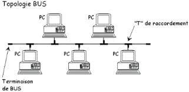
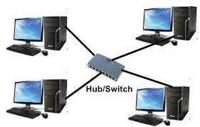
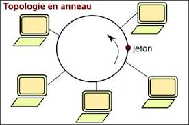
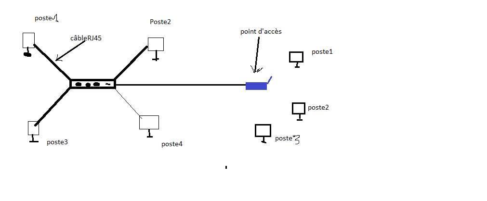

C’est l’ensemble de moyens matériels et logiciels mis en œuvre pour assurer la communication entre ordinateurs.
un réseaux informatique sert à :
• partager les ressources matérielles et logicielles entre les membres du réseau (documents, périphériques,…) ;
• Communiquer entre les membres du réseau ;
• Gagner du temps ;
• Réduire le coût d’équipements ;
• …
Les réseaux informatiques se classe en deux types selon la liaison matérielle : réseaux avec fil ou sans fil.
Pour créer un réseau avec fil, il faut une carte réseau pour chaque ordinateur et des câbles. • Des cartes réseaux classiques possèdent parfois deux types prises RJ45 ou BNC. • Des cartes réseaux spéciaux pour connecter les câbles à fibres optiques.
• Coaxial
• à doubles paires torsadées (RJ45)
• à fibres optiques
Pour communiquer en réseau sans fil, les ordinateurs, et périphériques doivent être équipés de récepteurs /émetteurs Wifi appelés adaptateurs sans fils.
Topologie : décrit la manière dont les équipements réseau sont connectés entre eux. Physiquement on distingue les topologies suivantes :
A-Topologie en bus
Tous les ordinateurs sont connectés directement à une liaison.

B-Topologie en étoile
Cette topologie comporte un nœud central d’où partent toutes liaisons avec les autres nœuds.

C- Topologie en anneau
Les éléments sont chaînés dans un anneau (chaque ordinateur communique avec ses voisins)

Remarque:
Le choix d’une topologie est basé sur plusieurs critères à savoir :
| Réseau filaire | Réseau sans fil | |
| Deux ordinateurs | Un câble RJ45 croisé et une carte réseau pour chaque ordinateur | Un adaptateur Wifi pour chaque ordinateur |
| A partir de 3 ordinateurs | Un HUB ou Switch avec des câbles RJ45 direct et des cartes réseaux | Un point d’accès et des adaptateurs Wifi |
On peut connecter les réseaux filaires au réseaux sans fil.
